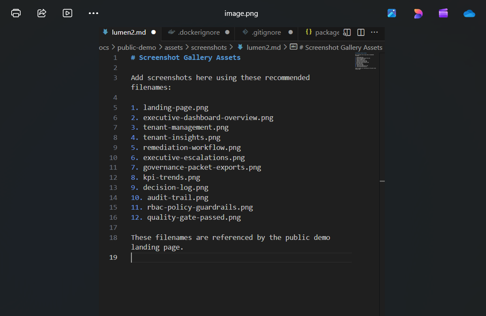
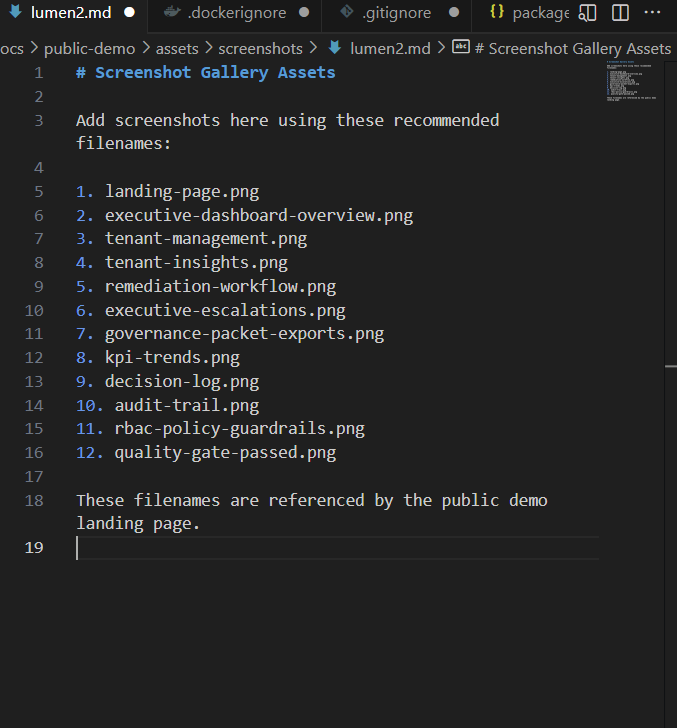

Enterprise Executive Intelligence for Regulated Operations
LumenAI converts operational risk into executive insight, accountable remediation, governance escalation, KPI trends, board-ready packets, audit trails, and RBAC policy guardrails.
The Executive Workflow
Demo Proof Points
Product Capabilities
Tenant Intelligence
Risk drivers, board attention flags, and executive-ready narratives.
Remediation Workflow
Owners, due dates, escalation levels, and closure tracking.
Governance Packets
DOCX, PPTX, and PDF board-ready exports with delivery audit history.
KPI Trends
Snapshots, movement tracking, and executive trend narratives.
Decision Register
Leadership decisions, approvals, completion tracking, and accountability.
Enterprise Controls
Audit logs, access decisions, role policies, and production readiness checks.
Screenshot Gallery
Add live screenshots to docs/public-demo/assets/screenshots/ using the filenames below.

Executive Dashboard
Portfolio intelligence, tenant management, automation, exports, audit, and RBAC in one operating view.

Tenant Management
Create and manage tenant records that drive risk scoring and executive workflows.

Remediation Workflow
Turn insights into assigned actions with status, due dates, escalation, and closure tracking.

Governance Packet Exports
Generate board-ready DOCX, PPTX, and PDF packets with delivery audit history.

RBAC Policy Guardrails
Viewer write denied, operator write allowed, and access decisions logged for governance review.

Quality Gate Passed
Enterprise smoke test validates the full operating chain from tenant creation to packet delivery.
Live Demo Links
Executive Dashboard
Production Readiness
/api/production-readiness/config